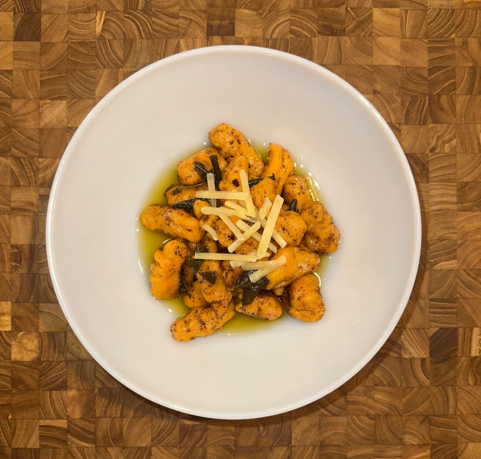

Handmade Sweet Potato Gnocchi with Brown Butter Sage Sauce and Parmesan

Ingredients
Sweet Potato
Flour
Butter
Fresh Sage
Parmesan
Salt & Pepper
Instructions
Preheat oven to 350 Pierce Sweet Potato all around with fork Bake unwrapped in oven for 45 minutes Wait for baked sweet potato to cool Peel off skin and discard Mash peeled sweet potato in bowl until there are no lumps Season with salt Add flour quarter cup at a time and gently fold with spatula When it becomes less sticky, move to a lightly floured surface Continue to add flour and knead until it forms a dough ball Boil a large pot of seasoned water Roll out dough ball into a long dough snake about an inch wide Cut snake into 1/2 - 1 inch gnocchi pieces/ To add grooves to the gnocchi, roll the pieces along the backside of a fork and set aside Add gnocchi to the pot in batches Gently stir water before adding them to prevent any sticking When the gnocchi start floating they can be removed and set aside (about 5 minutes) Melt a 1/2 stick of butter in a medium saucepan over medium-low heat Stir occasionally and add in sage leaves when butter starts to melt When butter starts to bubble and foam stir continuously and lower heat Once butter becomes golden brown remove from heat and toss gnocchi in sauce